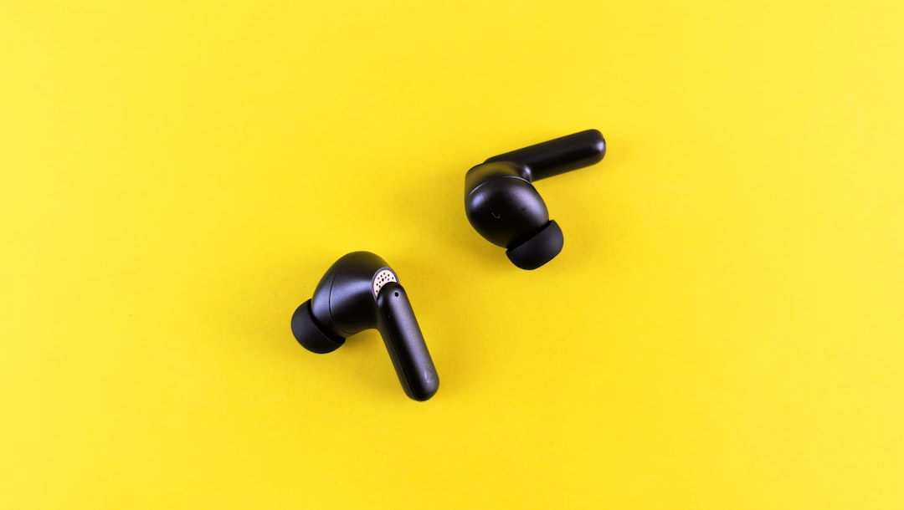

2030 소비 트렌드
2026 소비 리포트
아낄 건 아끼는데
왜
여기만
못 줄일까
무조건 줄이기보다 쓸 곳부터 정하는
2030의 소비법이 있습니다.
ENTRY 01
짠테크는
기본값
이 됐다
01
무지출 챌린지, 이제 당연한 루틴
하루 지출을 기록하고 인증하는 게 놀이처럼 자리잡았어요
02
아끼는 이유가 다르다
무조건 안 쓰는 게 아니라 '중요한 것'에 쓰기 위해 줄여요
절약도 하나의 '전략'이 된 시대
03
저축이 아니라 '선택'의 문제
얼마나 아끼느냐보다 어디에 쓸지를 먼저 정하는 방식으로 바뀌었어요
재테크 카드뉴스
P.01

ENTRY 02
그래도
여기엔
씁니다
01
여행·공연 같은 경험 소비
아낀 돈은 결국 여행이나 공연 같은 '경험'으로 다시 씁니다
02
AI 기기·구독 서비스
업무·학습 효율을 높여주는 AI 서비스와 기기엔 지갑이 쉽게 열려요
아끼는 이유는 결국 쓰기 위해서
03
남는 게 있는 소비인지부터 확인
사고 싶어서가 아니라 '내 삶에 남는지'를 먼저 따져봐요
재테크 카드뉴스
P.02
ENTRY 03
나만의
소비 근본
찾는 법
01
이번 달 지출을 3줄로 요약해보기
뭘 샀는지 말고 '왜' 샀는지를 적으면 소비 패턴이 보여요
02
아낀 돈에 이름을 붙이기
'여행 통장', '성장 통장'처럼 목적을 붙이면 절약이 오래갑니다
목적이 있으면 절약이 이어진다
03
한 달에 딱 하나만 지켜보기
전부 다 줄이려 하지 말고 하나만 정해서 실천해보세요
재테크 카드뉴스
P.03
SUMMARY
아끼는 게 아니라
고르는 것
짠테크의 방향
절약 → 선택
저장해두고 이번 달 소비부터 점검해보세요.
본인만의 소비 근본
이 있다면
댓글로 남겨주세요 💬
재테크 카드뉴스
P.04